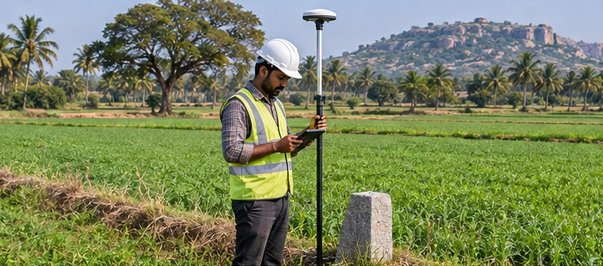

Land demarcation & partition
We use Tippan sketches, village maps, Sethwar records and DGPS measurements to mark land boundaries. For a partition, we measure each agreed share and prepare a plan showing its boundaries, dimensions and area.